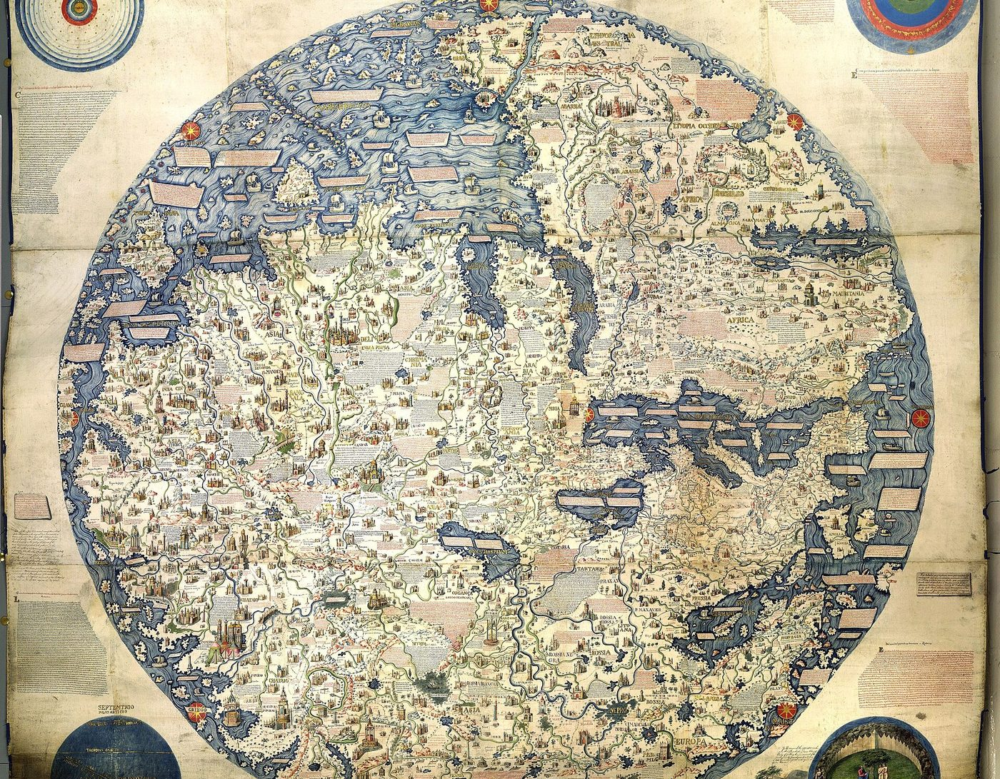

スパイラルダイナミクス › 7 / 10
黄の段階
善悪だけでは捉えきれない対立に、息苦しさがある。スパイラル・ダイナミクスの黄について、グレイヴスやベックらの説明を手がかりに、第二層・システム思考の特徴、橙や緑との違い、自己評価の問い、限界と青緑への展開を整理します。

物事を善悪だけで分ける見方に、どこか息苦しさを感じることがあるかもしれません。スパイラル・ダイナミクスで黄と呼ばれる段階は、対立の背後にある仕組みを見ようとする視点として説明されています。
ここでいう黄は、唯一の答えを掲げる段階ではありません。どの立場にも一片の真実があり、自分の考え方もまた数ある視点の一つにすぎない、と捉えます。段階には「システム的、統合的、多視点的」という題が付けられています。
黄とは何か――対立より仕組みを見る段階
グレイヴスは1974年の論文で、この移り目を「人間の本性は途方もない跳躍に備える」と表しました。紫、赤、青、橙、緑は第一層に置かれ、黄から「第二層」に入るとされます。
第一層では、各段階は自分の位置を段階の一つとして見にくく、隣り合う価値観を「ばか、狂っている、犯罪的」と受け取ることがある、と説明されます。第二層では、螺旋全体を眺め、異なる段階にもそれぞれの役割があると見る余地が生まれる、とされています。
第一層は「生き延びる」ことに関わる層として語られます。家族、仕事、お金、住まい、友人、娯楽までを含めて、生活を維持し前へ進める営みがここに置かれます。
第二層は「在ること」の層です。物事を「自分にどう役立つか」だけで測るのでなく、「それが何であるか」を見ようとする態度が、その入り口として示されます。
「生き延びることに追われているあいだ、人は世界をあるがままには見ていない。自分との関係で見ている。必要なものだけが見え、必要でないものは、そこにあっても見えない」
この説明では、価値の根を個人や集団の利益から離し、「存在そのものの壮大さ」に見いだすとされています。
黄の見方は、一本の望遠鏡よりも複眼にたとえられます。一つの細い視野に収めるのでなく、異なる位置から得た像を重ね、より大きな全体像を組み立てる、という比喩です。
「電波望遠鏡の配列が、いくつもの皿の資料を合わせて、どの一枚より大きなレンズを持っているかのような像を作るのと同じ」
宗教、科学、政党、文化も、それぞれの文脈をもつ視点として映ります。「自分が絶対の真理だと思っていた宗教も、もう一つの視点にすぎない。絶対の真理だと思っていた科学の模型も、そうです」
誰かを裁き、責め、悪者を作る営みから距離を取ることも、この段階の特徴として語られます。「自分はその遊びに加わらなくていい」と気づく、という表現が使われます。
黄の価値観――システム思考と全体へのまなざし
黄の特徴には、複雑さを急いで単純化しない姿勢、開かれた心、新しい概念への関心、長い時間の幅、持続可能性、文脈と歴史への注意などが挙げられます。
中心にあるのは、仕組みとして考えることです。表面で起きた出来事だけでなく、関係の連なり、非線形の動き、根にある問題を探ります。分解より統合を重んじ、異なる学問や経験をまたいで点と点をつなぐことも含まれます。
また、設計の対象は自分の色の利益だけではなく、螺旋の全体です。人を現在いる場所で受け止め、異なる価値観のあいだに橋を架けることが重視されます。
黄では、緑の「集団」から再び「個人」へ振り子が動くとされます。ただし、それは橙の個人主義とは異なるものです。
「橙は、犠牲を顧みない成功。黄は、他者を犠牲にしない自己表現。行きすぎた自己利益に敏感で、自分の足跡に気づいている。緑から人の感情を傷つけない感度を学び、緑が行きすぎた分を和らげて、橙と緑のあいだの釣り合いに戻す」
この対比では、成功や能力を否定するのでなく、それが周囲や全体へ及ぼす影響まで視野に入れることが黄の特徴とされています。
黄と橙を見分ける際には、次の注意が置かれます。
「仕組みを操ることと、仕組みを考えることを、混同しないでください」
仕組みを利用して自分を中心や頂点に置くことと、仕組みそのものの健やかさを考えることは別だ、とされます。後者の比喩として、こう述べられています。
「国立公園の管理人が生態系を守るのは、それで自分の懐を潤すためではない」
時間の取り方にも違いが示されます。「橙の経営者は、十年後に会社を壊すと分かっていても、次の四半期の利益を上げる。自分がいるのは三年で、十二四半期続けて利益を上げれば報われるから。黄はそう考えない」
黄はどこに現れるか
黄の例としては、特定の人物名だけでなく、学問、作品、活動の形が挙げられます。ただし、誰かをどの段階に置くかは、あくまでこの理論を用いる側の見立てです。
- 自己実現の心理学者。マズローが述べた「自己実現する人」の性質は、第二層の記述と重ねられることがあります。
- 一般システム理論、サイバネティックス、カオス理論、生物模倣など、世界を関係の網として扱う研究。
- 複数の学問領域を横断する研究者や、仕組みとして社会や環境を捉える人々。
- 量子力学の草創期の物理学者。「多くは黄の最先端で、青緑を覗きはじめていた。だから神秘主義に開かれていた」という見方があります。
- グレイヴス、ベック、そして理論そのもの。「黄の思考の典型」と呼ばれることがあり、「この模型は、一つの模型として、黄が愛するものです」と説明されます。
- SFの『スタートレック』に描かれる人類とヴァルカン人。最重要の規則として「他の種族の内政に干渉しない」が挙げられ、「未熟な種族が争っていても、自分たちのやり方で進化する必要があると知っているから、押しつけない」と説明されます。
- 持続可能な暮らし、環境都市の設計、紛争の調停、百科事典を皆で編む事業。
世界の大人のおよそ一パーセントが黄におり、文化的な影響力のおよそ五パーセントを持つという推計もあります。ただし、これは理論の側から示された推計であり、学術的な統計ではありません。
黄については、次のような言葉もあります。
「黄として生きるのは、かなり孤独です。街の平均的な人には理解されず、自分の見方はメディアにも政治にも掲示板にも、まず出てこない」
統治の形としては「知識を中心に置く、専門家と知識人による統治」が挙げられます。そのため青や橙からは「エリート」と呼ばれることがある、とされます。
「そう、彼らは情報のエリートです。それは悪いことではなく、必要なことです。ただ、青と橙にはそう見えないかもしれない」
自分は黄か――段階を測る問い
黄を考えるとき、「不健全な行きすぎ」よりも「本当に黄か、それともまだ第一層に戻っているか」を見つめる問いが大切だとされます。これは他人に色を当てはめるためでなく、自分の見方に残る偏りを確かめるための問いとして示されています。
最初に置かれる問いは、裁くことをやめたかどうかです。
「これがいちばん大事で、いちばん難しい。一生してきたことで、ニュースも友人も家族も、皆がしているから。エゴは『裁くのをやめたら悪いことが起きる』と言うが、それは嘘です」
誰かを悪者にすること、道徳で責めること、責任を押しつけること、議論が口論へ変わることから離れられるかが問われます。人類の問題を個人のせいでなく仕組みの問題として見ることも、ここに含まれます。
「あの人たちのせいだ、と思っているあいだは、どこにも進まない」
次に、自分が敵を必要としていないかを見ます。
暴力の話ではなく、思想の十字軍のことだとされます。右でも左でも、進歩派でも過激派でも、お気に入りの敵を持って、それに向かって吠え続けること。それを職業にしてしまうと、家賃のために続けることになる。そこへ自分を追い込まないように、と注意が添えられています。
公平さを保てるか、自分の思惑の外へ出られるか、参加している集団の外からその仕組みを眺められるかも、確かめる項目になります。
黄では、下の段階を誤りや排除すべきものとしてでなく、正当な位置をもつものと見ることが重視されます。
「これが第一層と第二層を分ける鍵です」
どの立場にも学べる部分を探せるかも問われます。
「どれほど下劣に見える視点でも、そこに学べるものがある。ただし、それは『どの視点も部分的に正しいなら、自分の視点も正しい』という言い訳ではない。自分の視点を手放して、他の視点を探るための話です」
他の見方に触れることを、単なる我慢ではなく楽しみとして感じられるか、という問いもあります。
「退屈な一つの視点に留まるより、いつも新しいものが見えるほうが面白い、と感じるか」
「問題を作ったときと同じ考え方では、その問題は解けない」
「地図は土地ではない」
「どの視点も、部分的に正しく、部分的に間違っている」
「知恵とは、自分が何を知らないかを知ること」
「模型が良くなるほど、問題は大きくなる」
「新しい時代には新しい考え方が要る」
「いろいろな人がいて、世界は回る」
この最後の言葉には、次の注が添えられています。
「蟻の巣には、働き蟻も兵隊蟻も要る。全員が同じ宗教、同じ思想、同じ自分のような人間になったら、それこそが災難です。そう見えたとき、人を自分に変えようとするのをやめる」
黄が反応することと限界
第二層は第一層ほど即座に反応しないとされますが、白黒の思考、短期的な判断、教条、同調、集団思考、分極、悪者作りには距離を感じることがあります。
とりわけ、行きすぎた合理主義や「科学を宗教にする人」、消費主義、お役所仕事、会議だけで時間が過ぎること、近視眼的な政治と駆け引きなどが挙げられます。
「ふつうの人が、存在の問い、世界の問いではなく、小さな当面の人間の問題に忙しいこと」も、黄が反応する対象として記されています。
過激派については、次のように述べられます。
「どの集団にも小さな過激な核があって、穏健な多数を過激にしようとする。彼らは黄を『中立すぎる、情熱がない、いつも真ん中を取る』と批判する。それは過激派から見える姿で、本当ではない」
黄には「不健全」と呼ぶほどのものは少ない一方、いくつかの限界があるとされます。ひとつは、模型と概念のなかへ閉じこもることです。
「模型を作るのが黄の飯の種で、それを手放すのは難しい」
複雑な分析に沈み、知識の多さが知的な傲慢へ変わることもあります。美しい構想を次々に描く一方で、形にする時間を保てない場合もあるとされます。
「翌日にはまた新しい構想が来るので、一つを何年もかけて形にすることができない」
また、冷たい個人主義者で一匹狼になり、共同体とのつながりを失うことも限界として挙げられます。理解の深さと幸福は同じではない、という指摘もあります。
「どれほど理解しても、どれほど模型が正しくても、幸福ではない。幸福は頭の中にはないから。黄は、それを認めるまで、何年も壁に頭を打ちつける」
青緑へ――黄の次にある壁
黄の次は「青緑」とされます。理性、直観、感情がひとつになり、地球規模の全体を生きる段階として説明されます。
黄から青緑への移り変わりは、マズローの晩年の考え方で説明されることがあります。
「マズローは自己実現を頂点に置いたピラミッドを作ったが、晩年に自分で神秘的な体験をして、その上に自己超越があると気づいた。ピラミッドの線を上へ伸ばすと、頂点から光が射すように逆三角形ができる。それが自己超越です」
この説明では、自分を育てる営みから、自分への執着をほどく営みへ、考えることと行うことから、在ることへ向かう動きが語られます。
- 理解や頭だけでは幸福に届かないと認めること。「幸福は、考える量に反比例する」
- 模型と概念を手放すこと。「地図は本当に土地ではない、と思い知ること」
- 論理を減らし、感情を呼び戻すこと。
- 心を開くこと、慈悲の瞑想。「黄は気にかけるが、無条件の愛はまだない」
- 支配への執着や、自分の信念の網をほどくこと。
- 言葉の限界に気づき、日常の場面で気づきを保つこと。
- 存命の聖者や賢者に会い、その空気を未来像に入れること。
- 一匹狼をやめ、共同体に入ること。「人の面倒と無理解と誤解と、そういう散らかったものを相手にするのは大変だが、それを避けているかぎり、指導者としては育たない」
- 長いあいだ頭を使わずに座る「無心」へ向かうこと。「何年か、何十年かかかるが、そこに向かって小さな一歩から」
この話のなかには、幻覚剤による神秘体験やクンダリーニの覚醒を入れる語り方もあります。そこで挙げられる物質は日本では麻薬及び向精神薬取締法の規制対象で、所持も使用も犯罪です。この部分は理論の内容そのものではありません。クンダリーニについては、めざめのクンダリーニのページに精神医学の側の注意があります。
黄を日本の言葉で考える――システム思考と守破離
黄の中心にある「仕組みとして見る」考え方は、日本では「システム思考」として経営や環境の分野で読まれています。複雑な世界を細かな部分へ切り分けるだけでなく、全体と関係のつながりとして捉える方法です。
生物学者ベルタランフィが1945年に出した一般システム理論と、ウィーナーらのサイバネティックス（1940年代）が起源として挙げられます。生物、企業、自治体、環境問題を、開かれた仕組みとして扱います。
この説明では、「小さな出来事が大きな変化を引き起こす」点と、「ある領域での変化が別の領域で逆の変化をもたらす」点が重視されます。そして「縦割りの思考の弊害を避け、すべてのレベルでの有機的なつながりを強調する」と説明されています。
黄に結びつけて語られる「鍼のような介入」と「跳ね返りの仕組みへの目」は、こうした見方に重なります。
段階を順にたどる考え方に近い日本の言葉として、守破離があります。千利休の道歌「規矩作法 守り尽くして破るとも 離るるとても本を忘るな」に由来する、茶道と武道の修業の三段階です。
まず型を徹底して「守」り、次に他流も照らしながら型を「破」り、最後に型から「離」れて自在になる、とされます。理論の言葉に寄せるなら、「守」は青、「破」は橙と緑、「離」は第二層に似ていると見ることができます。
ただし、守破離には段階を急がないための注意もあります。
「型がある人間が型を破ると『型破り』、型がない人間が型を破ったら『形無し』」
橙なら、エゴは自分を黄だと言いたがる、とされます。たいていは違う、という注意です。黄だとかなり確信していても、黄には深さの度合いがあって、どれだけ深く入っているかは別の話だ、と述べられています。
段階は格付けではなく、グレイヴスの考えでは、その人が置かれた生活の条件への答え方です。誰かに「あの人は第一層だ」という札を貼ることも、黄が距離を取ろうとする裁きの構図を繰り返しかねません。
理論を含め、どの説明もそのまま受け取るのでなく、限界を見つめる姿勢が置かれます。「模型は土地ではない。自分で考え、模型の限界を見つけること。それが、黄の人がすることです」
出典・参考
- Actualized.org, Spiral Dynamics - Stage Yellow（YouTube）第一層と第二層の違い、黄の本質と価値の一覧、橙との見分け方、例、自分が黄かどうかを測る問い、限界、青緑へ移る方法。引用は自動生成の字幕による
- Spiral Dynamics（英語版ウィキペディア）第二層は第一層の主題を繰り返すという理論の構造、段階は生活の条件への答えであるという立場、学術的な裏づけを欠くという評価
- Clare W. Graves（英語版ウィキペディア）1974年の論文「人間の本性は途方もない跳躍に備える」、自己を表す型と自己を抑える型の交替
- システム思考（ウィキペディア）ベルタランフィの一般システム理論、ウィーナーのサイバネティックス、レバレッジポイント
- 守破離（ウィキペディア）利休道歌に由来する、型を守り、破り、離れる三段階